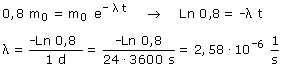

a)
Ecuación de desintegración en función de la masa:

Si se desintegra un 20% en un día quedará el 80% sin desintegrar.

La probabilidad de que, en un segundo, se desintegre uno de los átomos de la muestra es 2,58·10-6
Otra interpretación: cada segundo se desintegra el 2,58·10-4% de los átomos de la muestra (Siempre que haya muchos)